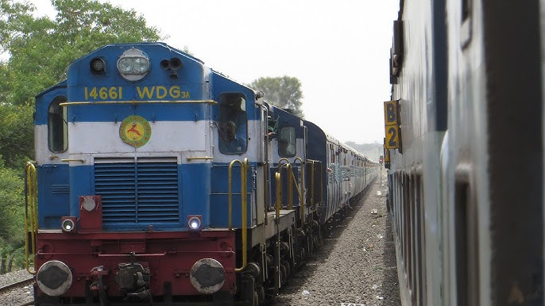

Indian Maharaja-Deccan Odyssey
The Indian Maharaja-Deccan Odyssey, launched in 2004, is one of India's most luxurious trains, designed to reflect the grandeur of royal palaces while providing a comfortable journey through some of the country’s most captivating regions. With opulent interiors, fine dining, and attentive service, the train offers an immersive experience into India's history and culture, stopping at destinations such as Mumbai, Jaipur, and the ancient caves of Ajanta and Ellora. This train offers more than transportation; it’s a heritage experience, combining luxury and tradition for travelers seeking a unique perspective on India's vibrant diversity and charm.
Characteristics
- Length: 250 meters
- Speed: Up to 130 km/h
- Year of Release: 2000
- Seating Capacity: 1000 passengers
- Route: Delhi to Mumbai